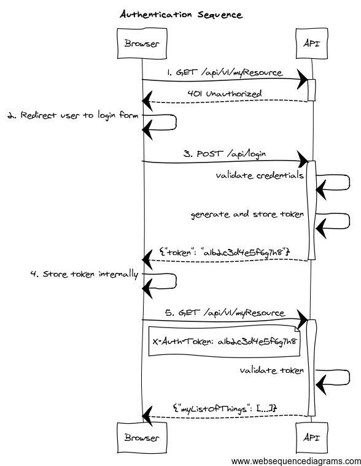

(Quick Reference)
Spring Security REST Plugin - Reference Documentation
Authors: Alvaro Sanchez-Mariscal
Version: 1.0.0.M3
1 Introduction to the Spring Security REST plugin
The Spring Security REST Grails plugin allows you to use Spring Security for a stateless, token-based, RESTful authentication.
The default behaviour of Spring Security is to store the authenticated principal in the HTTP session. However, in a
RESTful scenario, we need to make sure our server is stateless.
If you are writing an API that will be used by other programs, you can use OAuth for this. But if you are exposing your API
for a front-end Javascript client to implement a
Single Page Interface,
OAuth is not an option, specially if you want to authentication end users against your own user backend (eg: LDAP). In
this case, a token-based authentication may be a more suitable implementation, like the following:

- The client application requests and endpoint that requires authentication, so the server responds with a 401 response.
- The client redirects the user to the login form.
- The user enter credentials, and the client sends a request to the authentication endpoint. The server validates credentials, and if valid, generates, stores and sends back a token to the client.
- The client then stores the token internally. It will be sent on every API method request.
- The client sends again a request to the protected resource, passing the token as an HTTP header.
- The server validates the token, and if valid, executes the actual operation requested.
As per the
REST definition, the client is transferring its
state on every request so the server is truly stateless. The approach to store tokens on the server is just an alternative
to use HTTP basic authentication (so credentials are not passed on every request). It also helps to perform the validation
step (#5 in the diagram) faster, because the tokens, and the associated principal information may be cached. Finally,
storing tokens gives you the chance to decide about expiration strategies.
More information about this strategy can be found
on this post by James Ward.
This plugin helps you to wire your existing Spring Security
authentication mechanism, provides you
with ready-to-use
token generation strategies and comes prepackaged with Memcached and GORM support
for
token storage.
Release History
- 15 January 2014 (estimated)
Getting started
To use this plugin, add this to the
BuildConfig.groovy file:
compile ':spring-security-rest:1.0.0.M3'
2 Authentication Filter
The
authentication filter
uses the default
authenticationManager bean, which in turn uses all the registered authentication
providers. See the
Spring Security Core guide
for more information about how to define your own providers. Note that you can easily plug any Spring Security sub-plugin
(like the LDAP one) to use a different authentication strategy.
If the authentication is successful, a
token generator is used to generate a token, and a
token storage implementation is used to store the token.
Finally, the JSON response sent back to the client is rendered by a
restAuthenticationTokenJsonRenderer bean. The plugin
offers you a
default implementation
that renders a response like this:
{
"username": "john.doe",
"token": "1a2b3c4d",
"roles": [
"ADMIN",
"USER"
]
}If you want your own, simply create a class implementing
RestAuthenticationTokenJsonRenderer
and wire it up in
resources.groovy with name
restAuthenticationTokenJsonRenderer.
The current version expects the username and password as request parameters (there is a
task planned to add JSON support). Both the
parameter names, the URL where the filter is listening, and the response code sent when the authentication fails are
configurable with the following
Config.groovy properties:
| Config key | Default value |
|---|
grails.plugin.springsecurity.rest.login.endpointUrl | /login |
grails.plugin.springsecurity.rest.login.usernameParameter | username |
grails.plugin.springsecurity.rest.login.passwordParameter | password |
grails.plugin.springsecurity.rest.login.failureStatusCode | 403 |
3 Token Generation
The plugin comes prepackaged with 2 token generation strategies:
The strategy used is configurable in
Config.groovy:
| Config key | Default value |
|---|
grails.plugin.springsecurity.rest.token.generation.useSecureRandom | true |
grails.plugin.springsecurity.rest.token.generation.useUUID | false |
Both of them generate tokens of 32 alphanumeric characters.
That should be enough for most of the human beings. But if you still want to provide your own implementation,
simply write a class implementing
TokenGenerator
and wire it up in
resources.groovy as
tokenGenerator.
4 Token Storage
The tokens are stored on the server using a
tokenStorageService bean. The plugin comes with out-of-the-box support
for Memcached and GORM, but you can use your own strategy implementing the
TokenStorageService
interface.
4.1 Memcached
To use Memcached, simply define the following configuration properties to match your environments accordingly:
| Config key | Default value |
|---|
grails.plugin.springsecurity.rest.token.storage.useMemcached | false |
grails.plugin.springsecurity.rest.token.storage.memcached.hosts | localhost:11211 |
grails.plugin.springsecurity.rest.token.storage.memcached.username | '' |
grails.plugin.springsecurity.rest.token.storage.memcached.password | '' |
grails.plugin.springsecurity.rest.token.storage.memcached.expiration | 3600 |
For development, if you have Memcached installed locally with the default settings, just define
grails.plugin.springsecurity.rest.token.storage.useMemcached = true. It should work.
4.2 GORM
To use GORM, those are the relevant configuration properties:
| Config key | Default value |
|---|
grails.plugin.springsecurity.rest.token.storage.useGorm | false |
grails.plugin.springsecurity.rest.token.storage.gorm.tokenDomainClassName | AuthenticationToken |
grails.plugin.springsecurity.rest.token.storage.gorm.tokenValuePropertyName | tokenValue |
grails.plugin.springsecurity.rest.token.storage.gorm.usernamePropertyName | username |
The domain class should look like this:
class AuthenticationToken { String tokenValue
String username
}
In this case, instead of storing the whole UserDetails object, only the username is stored. This is because applications
using this strategy will probably have the standard User and Role domain classes. Then, the username is passed to the
default userDetailsService bean, which in the case of the default Spring Security Core GORM implementation will fetch
the information from the mentioned domain classes.
5 Token Validation Filter
The token validation filter looks for the token in a HTTP header and then tries to validate the token using the configured
token storage implementation.
If the validation is successful, the UserDetails object is stored in the security context. This allows you to use in
your application
@Secured,
springSecurityService.currentUser and so on.
The configuration properties are:
| Config key | Default value |
|---|
grails.plugin.springsecurity.rest.token.validation.headerName | X-Auth-Token |